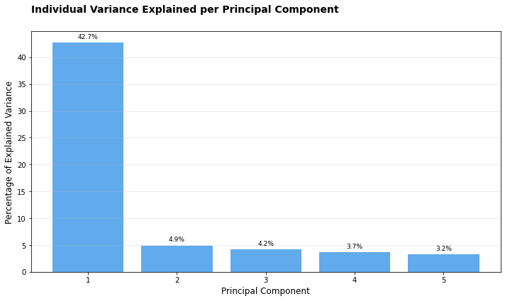

A class for creating dimensionality reduction plots (PCA, MDS) from pandas DataFrames.
# Create synthetic datanp.random.seed(42)# Number of samples and featuresn_samples =50n_features =100# Generate random data with two distinct groups and some structuredata = np.random.randn(n_features, n_samples)# Add some structure - make the first 30 features higher in first 25 samplesdata[:30, :25] +=2# Create a pandas DataFramefeature_names = [f'feature_{i}'for i inrange(n_features)]sample_names = [f'sample_{i}'for i inrange(n_samples)]df = pd.DataFrame(data, index=feature_names, columns=sample_names)# Create sample groups - mapping each sample to its colorsample_groups = {}for i inrange(n_samples):if i <25: sample_groups[f'sample_{i}'] ='red'else: sample_groups[f'sample_{i}'] ='blue'# Create feature groups - mapping each feature to its colorfeature_groups = {}for i inrange(n_features):if i <30: feature_groups[f'feature_{i}'] ='green'elif i <60: feature_groups[f'feature_{i}'] ='purple'else: feature_groups[f'feature_{i}'] ='orange'# Create a color dictionary for nice labelscolor_dict = {'red': 'Group A','blue': 'Group B','green': 'Gene Set 1','purple': 'Gene Set 2','orange': 'Gene Set 3'}# Preview the datadf.iloc[:5, :5]
sample_0
sample_1
sample_2
sample_3
sample_4
feature_0
2.496714
1.861736
2.647689
3.523030
1.765847
feature_1
2.324084
1.614918
1.323078
2.611676
3.031000
feature_2
0.584629
1.579355
1.657285
1.197723
1.838714
feature_3
2.250493
2.346448
1.319975
2.232254
2.293072
feature_4
2.357787
2.560785
3.083051
3.053802
0.622331
# Create a plotter instanceplotter = DimensionalityReductionPlotter( in_df=df, top=50, # Use top 50 features color_dictionary=color_dict)# Fit PCA and plot samplesplotter.fit(method='pca', n_components=5)fig, ax, tmp_df = plotter.plot_samples( palette=sample_groups, point_size=80, do_adjust_text=False, title="PCA of Synthetic Data")tmp_df.iloc[:5, :5]
# Individual explained variancefig, ax, tmp_df = plotter.plot_explained_variance( cumulative=False, color="#1E88E5", title="Individual Variance Explained per Principal Component")tmp_df.head()
component
explained_variance
cumulative_variance
0
1
42.735199
42.735199
1
2
4.923835
47.659034
2
3
4.162556
51.821590
3
4
3.670320
55.491911
4
5
3.233770
58.725681

# Switch to MDSplotter.fit(method='mds', metric=True, random_state=42)# Plot MDS resultsfig, ax, tmp_df = plotter.plot_samples( palette=sample_groups, point_size=80, title="MDS of Synthetic Data")tmp_df.head()
/Users/MTinti/miniconda3/envs/work3/lib/python3.10/site-packages/sklearn/manifold/_mds.py:517: UserWarning: The MDS API has changed. ``fit`` now constructs an dissimilarity matrix from data. To use a custom dissimilarity matrix, set ``dissimilarity='precomputed'``.
warnings.warn(
Create a comprehensive 2x2 dashboard of dimensionality reduction visualizations.
# Create the dashboardfig, axes, results_dict = create_dim_reduction_dashboard( in_df=df, sample_palette=sample_groups, feature_palette=feature_groups, top=50, color_dictionary=color_dict, title="Synthetic Data Analysis Dashboard")# Fine tune the figure if neededplt.tight_layout(rect=[0, 0.03, 1, 0.95]) # Adjust layout to accommodate suptitle and caption# Now you have access to all the DataFrames for further analysisprint("Available DataFrames in results_dict:")for key in results_dict:print(f"- {key}: {results_dict[key].shape}")# Example of further analysis with the returned DataFramesprint("\nExamined variance explained by first 3 components:")print(results_dict['explained_variance'].head(3))
/Users/MTinti/miniconda3/envs/work3/lib/python3.10/site-packages/sklearn/manifold/_mds.py:517: UserWarning: The MDS API has changed. ``fit`` now constructs an dissimilarity matrix from data. To use a custom dissimilarity matrix, set ``dissimilarity='precomputed'``.
warnings.warn(